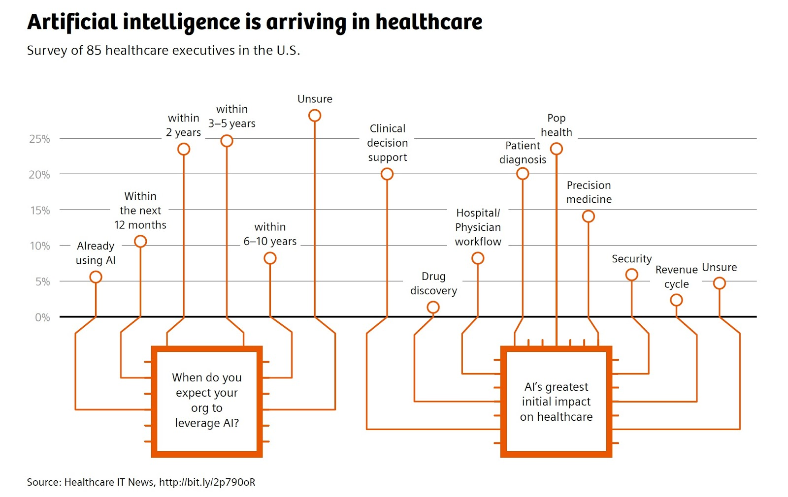

Machine learning and deep learning have revolutionized our ability to analyze and find patterns in multi-dimensional and intricate datasets. As such, these methods have the ability to help us decipher the large volume of data generated within healthcare. Rather than replacing physicians and healthcare workers, these tools hold the promise of enhancing patient care through several modalities, including clinical decision support, monitoring tools, image interpretation, and triaging capabilities. Importantly, the use of machine learning and deep learning may not only ease workflows, but may be critical for a better and more precise understanding of disease.

This session will focus on emerging machine learning and deep learning tools that aim to solve major challenges in medicine. A goal of this session will be to showcase papers that have identified a true clinical need that can be addressed by these methods. We hope to facilitate a conversation on how machine learning/deep learning researchers and healthcare providers can work together to create a more effective health care system.
We believe that this is an exciting time for the development of machine learning and deep learning algorithms to solve healthcare problems. Because of the massive scale of complicated data - both in text and in images within medicine, machine learning and deep learning will be able to find patterns in disease and predict outcomes in ways that humans cannot.
Examples of topics within the scope of this session include but are not limited to:
Poster presenters will be provided with an easel and a poster board 32"W x 40"H (80x100cm). One poster from each paid participant is permitted. See the submission portal web site for the instructions regarding poster submissions.
Last updated: April 1st, 2019